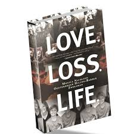

TANGLED FEELINGS
He was my Mr. Red, attracted my human eye with power, strength, excitement, emotion and love. Together, I thought we were unbreakable. My other urgency traffic light. I swear he was restful. It was an emotion I had no control over that accomplished nothing and meant even less than that. If anything, it was really tiresome. My healing power, my free traffic, my harmony, turned out to be the worst thing I ever happened in my life. How easily was he capable of taking away my heart stability, warmth, light, clarity, happiness and positivity? With him I felt secure, in his arms there was goodness and innocence.
The problem wasn’t him, it was me. I realized that I made excuses for his bad behavior, I accepted his pretty lies, and gave him another chance, again and again. I sold myself short, and I stayed too long, I learned the hard way, but I learned. You don’t know pain until you cried and sat there wondering why the person you love would do you like that. When my mum asked me what was wrong I just said I was tired because I did not have the heart to tell the lady who gave me life that I don’t want it anymore. You really don’t know hurt until you have been in your room, no noises, door locked, crying because you just wish some shit would stop. Silent crying because you don’t want nobody hearing you, bothering you, or even asking what’s wrong.
I was done trying. This was my goodbye, to our good memories and bad. To our inside jokes and the ones we never quite got, and to all the what-ifs we had. It allows you to exist in a state of suspended animation. Sorry, I didn’t mean to call you “its okay”, he said, but honestly I wanted to talk to him, to hear his voice and laugh. I know we weren’t on the best of terms, I missed him so much. It was our last and longest conversation, I told him goodbye forever, I could hear him stammer, and “My l-o-v-e…” I had to hang up because I was done trying.
Sad roses